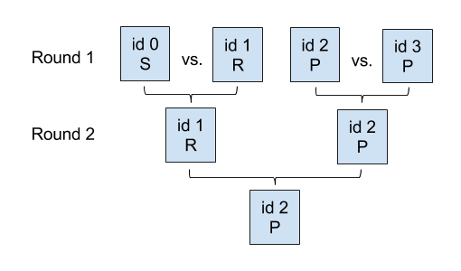

Your Rock-Paper-Scissors tournament yesterday went so well that you've been asked to organize another one. It will be a single-elimination tournament with N rounds. 2N players will participate, and they will have unique ID numbers in the range 0 through 2N-1, inclusive.
Initially, the players will be lined up from left to right, in increasing order by ID number. In each round, the first and second players in the lineup (starting from the left) will play a match against each other, and the third and fourth players in the lineup (if they exist) will play a match against each other, and so on; all of these matches will occur simultaneously. The winners of these matches will remain in the lineup, in the same relative order, and the losers will leave the lineup and go home. Then a new round will begin. This will continue until only one player remains in the lineup; that player will be declared the winner.
In each Rock-Paper-Scissors match, each of the two players secretly chooses one of Rock, Paper, or Scissors, and then they compare their choices. Rock beats Scissors, Scissors beats Paper, and Paper beats Rock. If one player's choice beats the other player's choice, then that player wins and the match is over. You are tired of worrying about ties, so you have decided that if the players make the same choice, the player on the left wins the match.
You know that the players this year are not very strategic, and each one has a preferred move and will only ever play that move. Fortunately, you know every player's preferred move, so you can figure out: what is the ID number of the player who will win the tournament?
Here's an example tournament with N = 2: In Round 1, player 1 beats player 0 (since Rock always beats Scissors), and player 2 beats player 3 (since the player with the lower number wins a tie). In Round 2, player 2 beats player 1 (since Paper always beats Rock). So, player 2 is the winner.
The input library will be called "rps"; see the sample inputs below for
examples in your language. It defines two methods: GetN(), which returns the
number N of rounds in the tournament, and GetFavoriteMove(id), which
returns the favorite move of the player with ID number id, for
0 ≤ id < 2GetN(). This move will always be either
R, P, or S, representing Rock, Paper, or
Scissors, respectively.
| Method name and parameters | Parameter limits | Returns | Approximate time for a single call |
|---|---|---|---|
| GetN() | a 64-bit number | 0.09 microseconds | |
| GetFavoriteMove(i) | 0 ≤ i < 2GetN() | a character | 0.09 microseconds |
Output one value: the ID number of the winning player.
Time limit: 3 seconds.
Memory limit per node: 128 MB.
Maximum number of messages a single node can send: 1000.
Maximum total size of messages a single node can send: 8 MB.
GetFavoriteMove(id) is always one of R, P, or
S for all valid values of id.
Number of nodes: 10.
1 ≤ GetN() ≤ 10.
Number of nodes: 100.
1 ≤ GetN() ≤ 28.